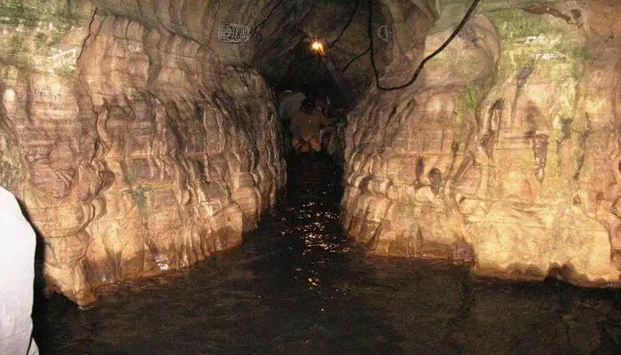

Ram Ghat, located on the banks of Mandakini River, is among the most visited religious destinations in Uttar Pradesh. Just like many other places in this district, it is believed to have played host to an episode from the mythological epic, Ramayana. Just find a spot on the stairs leading to the ghat and sit down for a while. You will feel the serenity in the air. Ram Ghat, which is one of the most popular tourist attractions in Uttar Pradesh, is believed to be the place where Lord Rama, Goddess Sita and Lord Laxman held an elaborate conversation with Saint Goswami Tulsidas. This is a major reason why it occupies a special place in the hearts and minds of the people. Though it may share several features with other ghats in India, there is one aspect in which it stands out from the others. The ghat offers boating facilities to the tourists, and you can find these boats lining the steps leading to the river. A massive statue of Lord Hanuman stands in one corner of thee ghat, blessing everyone who visits it. There are several benches which let you sit and observe everyday life at the ghat. If you are planning a trip to Chitrakoot anytime soon, this is one place which you should not miss out on. Popular Tourist Attractions Nearby The district of Chitrakoot is dotted with several places of religious significance. These also make for some exciting sightseeing. Here are some of the most visited tourist attractions in Chitrakoot apart from Ram Ghat. Hanuman DharaGanesh BaghRam DarshanGupt GodavariJanki KundBharat Milap TempleSati Anusuya AshramRam Ghat Best Time to Visit The district of Chitrakoot is situated in the state of Uttar Pradesh. As a religious site, you can visit it throughout the year. The best time to visit it though, depends upon the kind of weather in which you prefer to travel. Anybody who has visited this place will know that it can get unbearably hot during the summers, with temperatures averaging 47°C. The heat, undoubtedly, can be a put off for many people. If, however, the heat is not a major concern, you can certainly plan a trip to Chitrakoot during the summer season. During the winter season, the weather turns quite cool, pleasant and amicable. A lot of tourists prefer visiting this place during this time, as sightseeing is best enjoyed during this time. You too, can plan a visit during winters, if you prefer cool weather.
Ram Ghat is not a temple, but a very important pilgrimage site for Hindus in Chitrakoot. Those who know about this place’s history and have lived in the town say that Lord Rama and Laxman along with Sita had taken a bath in the river. This ghat is situated on the bank of River Mandakini. This ghat remains crowded by a lot of Hindu devotees for the religious reason that it has. However, it is not the only reason for which it is known. It attracts a lot of photographers too, as the view is mesmerizing. If you want to explore the beauty of the river and the place completely then you should take a ride on the boat. You can come straight away from the Chitrakoot bus stand as this place is just 2km away. You won’t get charged for visiting this place.
Mandakini Ganga in Chitrakoot is not to be confused with Mandakini, a tributary of Ganga on the Kedarnath and Chopta route in the Himalayas. I sat on the stairs leading to the temple, taking in the morning life at Ramghat. Sadhus, sadhaks, beggars and visitors all took dips on the same ghat, and a local family was down for their daily bath too, with kids being srubbed by older siblings. I noticed that no soap was used here. The same ghat has evening arti of Mandakini Ganga (not to confused with Mandakini, a tributary of Ganga on the Kedarnath and Chopta route in the Himalayas), which looked quite tame in the morning, a shade different from the bouncy, starlit body we saw at night.
Sati Anusuya ashrama is 16 km from Ramghat, and upstream from Janaki kund. The place has a mountain for a backdrop, where Mandakini river is born. The river is lined by trees, probably wild almond and others, and the place is a perfect picnic spot, with fish playing around one's ankles. This is the holy site where Atri muni and Anusuya lived.There is also an interesting story behind her name. It is believed that this region was parched because of no rains for ten years. Then, Anasuya performed hard penance, and finally succeeded in bring River Mandakini down on earth. She was called Sati for her supreme sacrifice and enduring immense hardships during her penance. In fact, her dedication and love towards her husband and her duties were so great that even Goddess Sita sought her blessings during her exile with Lord Rama. She also received lessons in humility, devotion and all other qualities that a chaste, noble and devoted woman should possess.The ashram itself is surrounded by thick vegetation and hills on all sides. This plays a big role in lending it that serenity and tranquillity, not to mention the spiritual aura, that is famous for. There is an enormous temple dedicated to Mahasati Anasuya along with her husband, Maharishi Atri and their son, Dattatreya. Apart from statues inside the temple of the three noble souls, there are depictions from Sati’s life which lend an aesthetic appeal to it.
We reached Sphatik shila in the midst of heavy rain, which added to the wild beauty of the place. It is not far from Janaki Kund. There is boulder here, which bears Rama's footprint and this is where Sita pecked at by a crow, Jayant.Sphatik Shila is a place with two massive rocks which are believed to have the footprints of Lord Rama and Goddess Sita. Sphatik Shila literally means crystal rock and is located amidst dense forests, close to Janki Kund on the banks of river Mandakini. It is said that Sita and Rama were relaxing here and a crow pecked the feet of goddess Sita which agitated lord Rama and he took off the eyes of the crow, however the crow was actually a form of Jayant, son of Lord Indra.
The pair of caves at Gupt-Godavari are about 18 km from Ramghat. We sang bhajans here which resonated beautifully. The spring water here is said to be connected underground to river Godavari and so it gets the name Gupt Godavari. Panchmukhi Shiva outside the caves was quite interesting.
Gupt Godavari is counted amongst the most interesting places to visit in Uttar Pradesh. It is both a natural wonder and a place of immense spiritual significance. Like all the other famous tourist attractions in Chitrakoot, there is a fascinating mythological tale behind it.
One of these caves is very high and wide, along with a narrow entrance which makes it quite difficult for anyone to pass through. The other cave though, is very long and narrow. A stream of water keeps flowing continuously from rocks deep inside the cave. These then flow towards another cave before simply disappearing into the ground. It is a strange phenomenon which has always bewildered tourists and has also led to this place being named as Gupt Godavari. The bigger of these caves also displays two stone carved thrones. These are believed to belong to Lord Rama and Lord Laxman.
Welcome in Arogyadham. A MODEL OF CONVENTIONAL MANUFACTURING SYSTEM AS WEL AS GMP IN AROGYADHAM CHITRAKOOT Presented by Dr. Vijay Pratap Singh. AIMS & OBJECTIVE. To improve the Socio-economic status of rural people by purchasing the herbs & fuels from them .
Ganesh Bagh is one of the most visited tourist attractions in Chitrakoot in Uttar Pradesh. Located on the Karvi-Devangana Road, it is a place of both aesthetic and historical significance. The main attractions of this place is the temple, palace and the step well. The palace which stands here was built during the 19th century by the Maratha ruler, Peshwa Vinayak Rao. It is maintained by the Archaeological Survey of India and draws visitors with its aesthetic proportions. At one point of time, this structure is believed to have served as the summer resort of the royal family. Even though most of it now lies in ruins, they give you an idea of its magnificence at one point of time.The other attraction here is the temple dedicated to Lord Shiva Temple. The temple, with its exquisitely carved domes and erotic sculptures on its niches and pillars, reminds you instantly of the Khajuraho Temples in Madhya Pradesh. This has also led to its being called mini-Khajuraho. The arched gateways and pillars also contribute to the overall beauty of the temple in a big way.